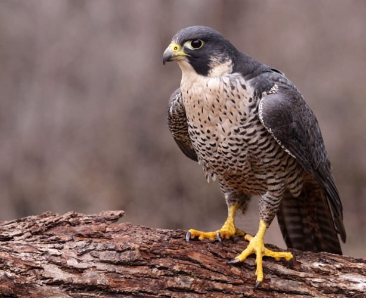

Die schnellsten Jäger: Falken
Falken sind für ihre unglaubliche Geschwindigkeit und Wendigkeit bekannt. Der Wanderfalke gilt als das schnellste Tier der Welt und erreicht im Sturzflug Geschwindigkeiten von über 300 km/h. In der Schweiz sind neben dem Wanderfalken auch der Turmfalke und der Baumfalke anzutreffen.
Bildergalerie
Hier sind einige Eindrücke von verschiedenen Falkenarten:
Merkmale und Jagdtechniken
Falken zeichnen sich durch einige besondere Merkmale aus:
- Spitze Flügel für hohe Geschwindigkeiten
- Hervorragendes Sehvermögen
- Spezialisierte Jagdmethoden:
- Sturzflug: Der Wanderfalke jagt Vögel im Flug, indem er aus grosser Höhe herabstürzt.
- Rüttelflug: Der Turmfalke kann in der Luft an einer Stelle "stehen" (rütteln), um am Boden nach Beute wie Mäusen Ausschau zu halten.
- Luftjagd: Der Baumfalke ist wendig genug, um Insekten wie Libellen und sogar Schwalben in der Luft zu fangen.
- "Falkenzahn": eine zahnähnliche Einkerbung im Oberschnabel, die zum Töten der Beute dient.